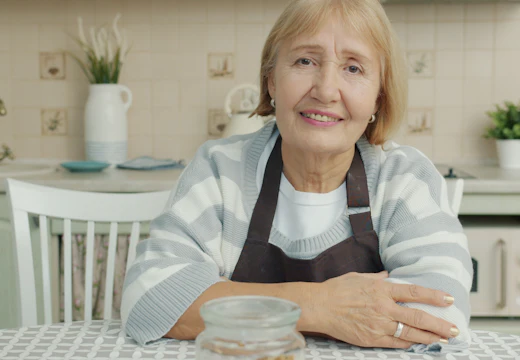
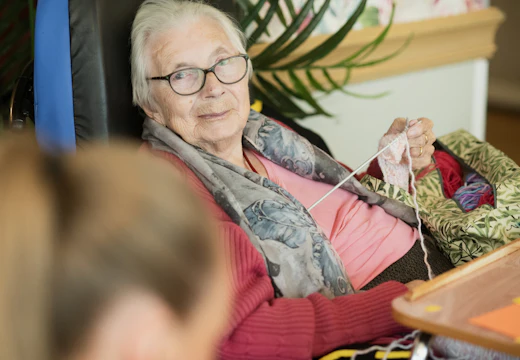
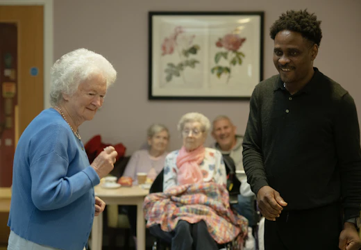

6 yrs experience
Companion caregiver
The people behind the care
Every Stackly caregiver is background-checked, professionally trained, and personally matched to your loved one's needs, routines, and personality.
Our care philosophy
Great care comes from people who feel called to it. We look for patience, reliability, and genuine warmth, then surround those qualities with rigorous training and steady support.
Identity, references, and criminal background checks for every single applicant.
Role-specific certification plus 40+ hours of onboarding before a first visit.
We pair skills, language, and personality so the fit feels natural from day one.
Coordinators and clinicians coach and check in long after the first week.
Meet our caregivers
Filter by specialty or language to see the people who could care for your loved one. Every profile is a real member of the Stackly team.
Showing all 6 caregivers
Companion caregiver
Certified home health aide
Registered nurse
Clinical care lead
Personal care specialist
Memory care specialist
No caregivers match those filters yet. Try another specialty or language, or ask our team for a personal match.
Training & certification
Trust is earned with standards you can verify. Every caregiver is licensed, screened, insured, and reviewed before they ever step through your door.
A day in the life
A caregiver's day is built from steady, familiar moments. Here is how one unfolds, hour by hour.

8:00 AM
A warm hello, help with washing and dressing, a nourishing breakfast, and a calm check that medication is taken on time. The morning sets a steady tone for the day.

1:00 PM
Lunch prepared together, then time for a loved hobby or a favourite programme. Shared activity keeps hands busy and spirits lifted, and it is never rushed.

4:30 PM
A short walk or time with others, a cup of tea, and a gentle handover to family or the next caregiver. Notes are logged so nothing important slips.
Caregiver stories
Families tell it best. These are the words of people who see the Stackly difference every single week.
“Elena explained every step of my mother's care in plain language. For the first time since the diagnosis, we felt like a team.”
“James is the reason my father is walking again. He is encouraging without ever being pushy, and Dad genuinely looks forward to his visits.”
“Maya learned my grandmother's favourite songs within a week. That is more than care, that is attention to who someone really is.”
Join our team
If caring comes naturally, we would love to meet you. Build a flexible career that fits your life, with real training and a team that has your back.
Ready when you are
Tell us what your loved one needs and values. We’ll introduce a caregiver whose skills and spirit fit, then stay close as the relationship grows.